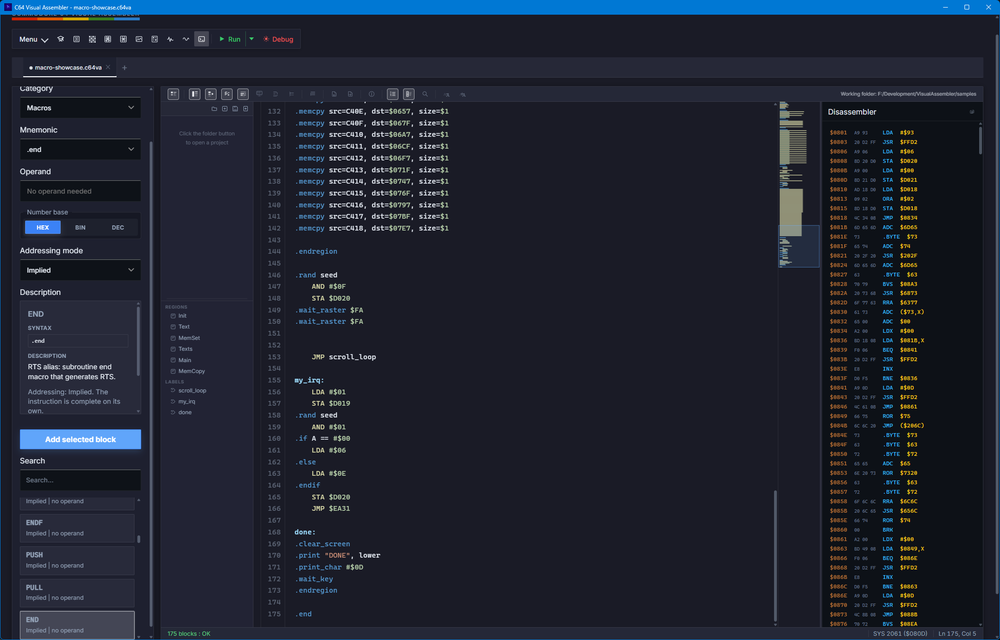
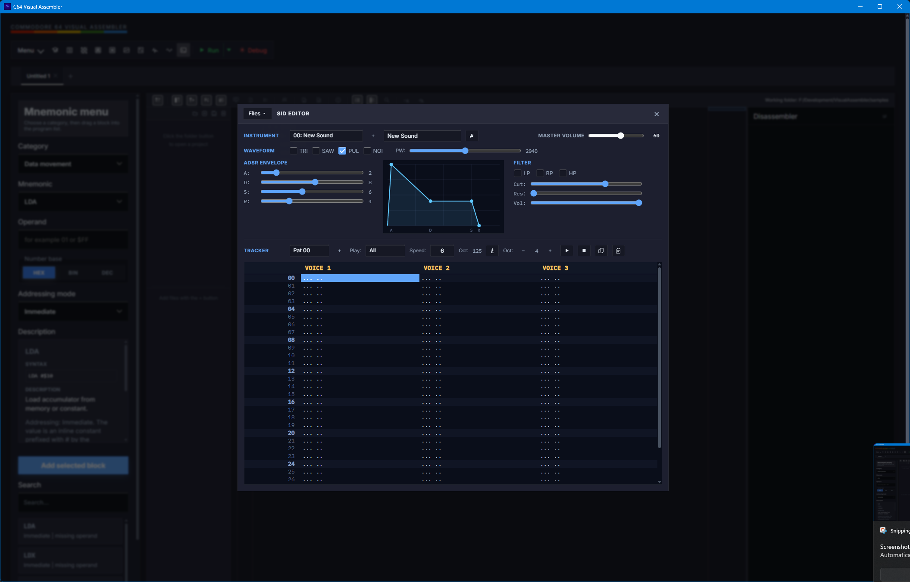
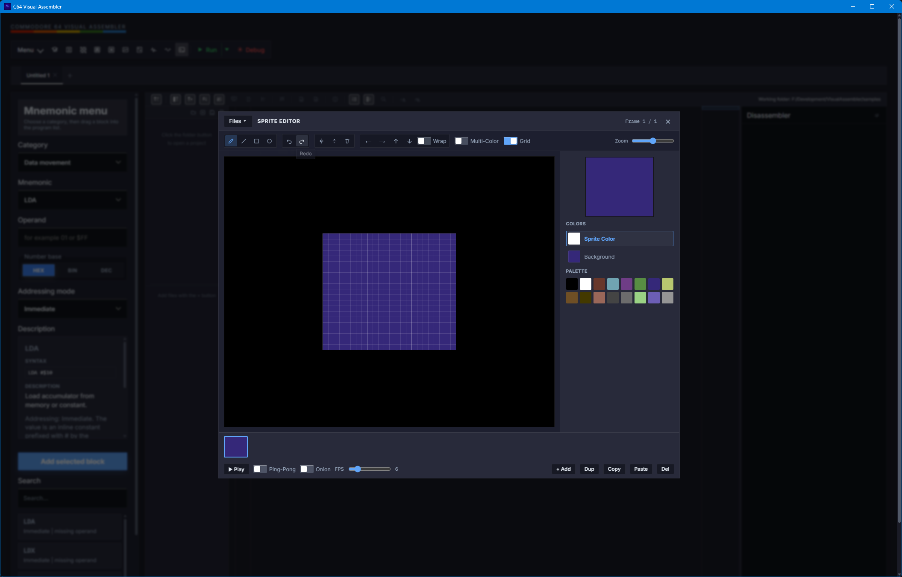
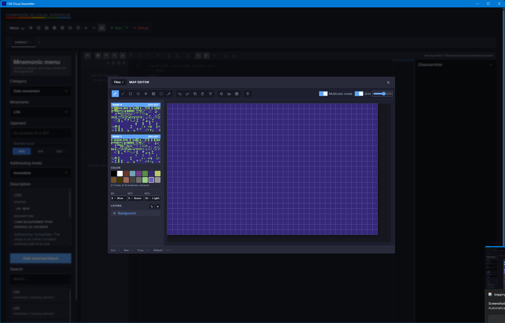
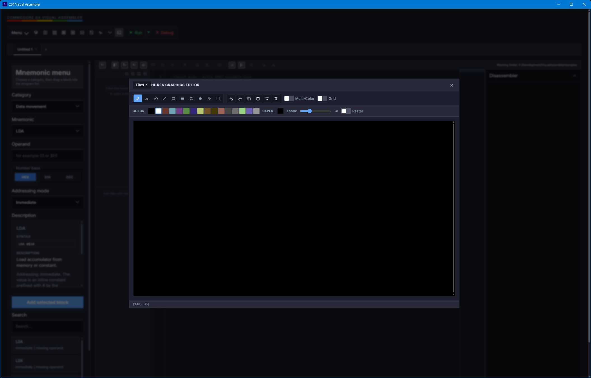
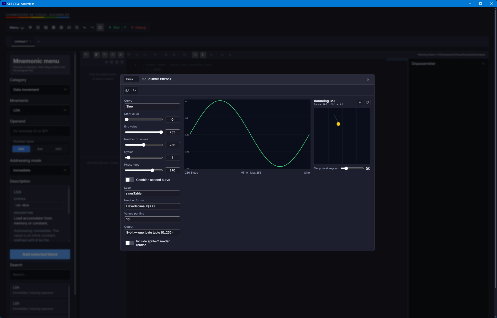
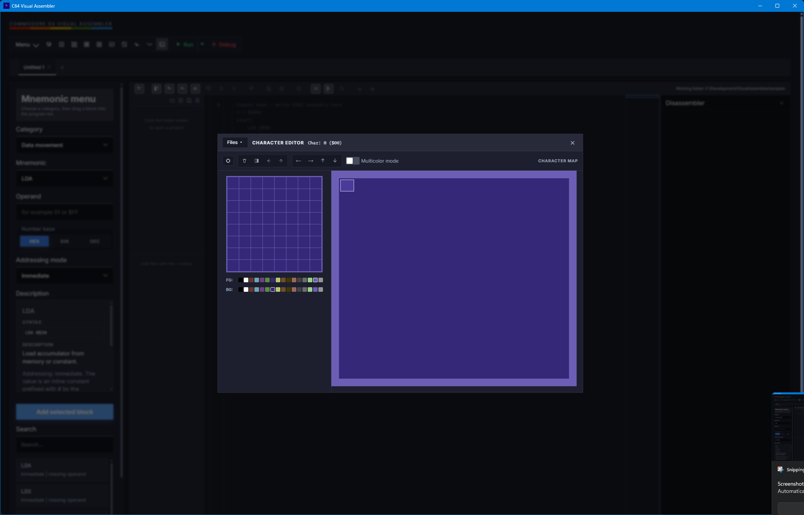
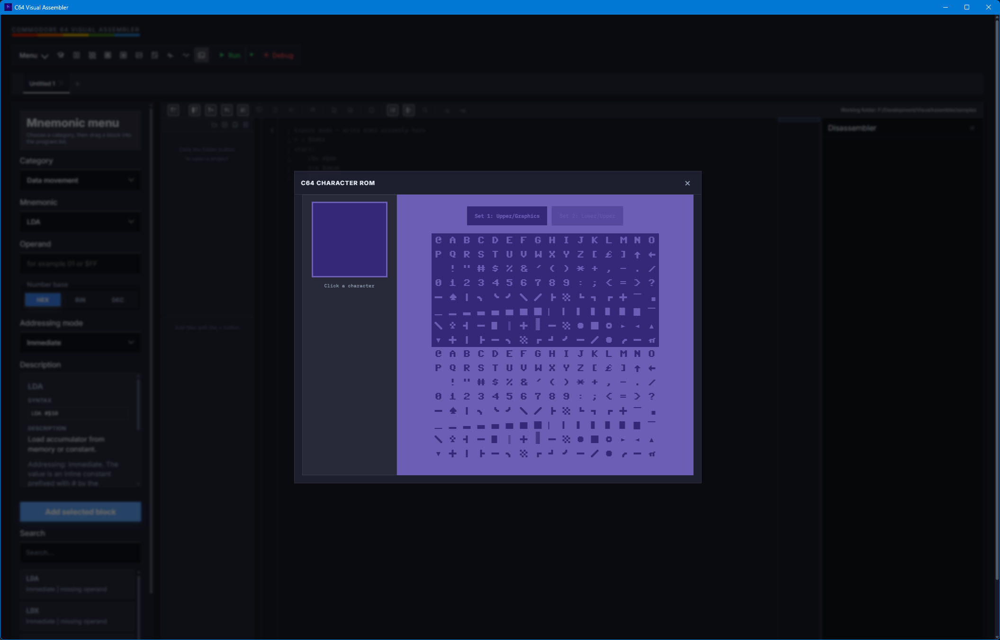
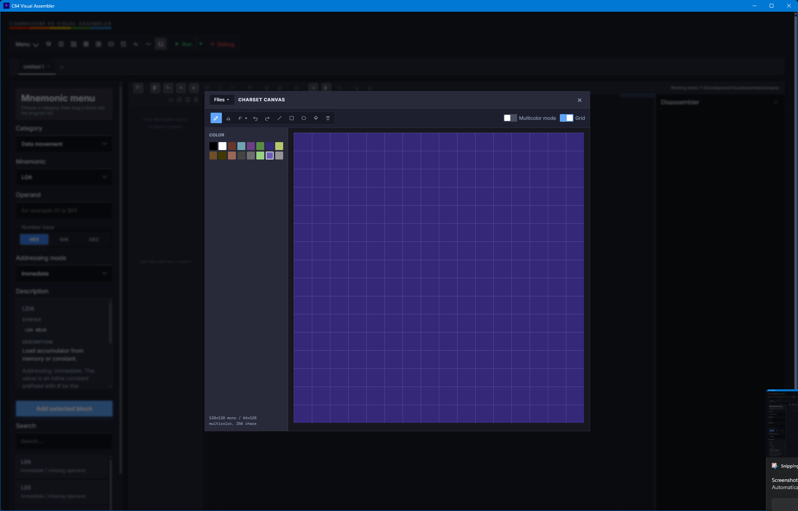

// VISUAL EDITORS
BUILT-IN TOOLS FOR
EVERY C64 ASSET
BLOCK EDITOR
ULTIMATE BASIC
ASM EDITOR
SID MUSIC
SPRITES
TILEMAP
GRAPHICS
CURVES
CHARACTERS
CHAR ROM
CHARSET CANVAS

BLOCK PROGRAM EDITOR + ASM VIEWDRAG BLOCKS FROM LEFT → COMPILE LIVE → RUN IN VICE
ULTIMATE BASIC — COMPLETE IDE MODEEDIT .UB SOURCES, MANAGE PROJECTS, BUILD AND RUN FROM ONE WORKSPACE

EXPERT MODE — FULL ASM TEXT EDITORSYNTAX HIGHLIGHTING, LIVE ERROR FEEDBACK, FIND BAR, MINIMAP, REGIONS

SID EDITOR — 3-VOICE TRACKERWAVEFORM, ADSR ENVELOPE, FILTER, WEBSID WASM PREVIEW, IRQ EXPORT

SPRITE EDITOR — FRAME-BY-FRAME ANIMATIONMONO & MULTICOLOR, FLIP/SHIFT, ONION SKIN, .BIN EXPORT

TILEMAP EDITOR — MULTI-LAYER MAPCHARSET BANKS, COLOR RAM, MULTICOLOR, MAP_COPY MACRO EXPORT

HI-RES GRAPHICS EDITOR — 320×200PIXEL DRAWING, MULTICOLOR MODE, NATIVE .BIN EXPORT (10KB)

CURVE EDITOR — MATH TABLE GENERATORSINE, EASING, TRIANGLE, BOUNCE — 8-BIT OR 16-BIT LO/HI OUTPUT

CHARACTER EDITOR — 8×8 PIXEL CHARSETMONO & MULTICOLOR, SHIFT/FLIP TOOLS, .BIN EXPORT

CHARACTER ROM BROWSER — BUILT-IN C64 CHARSETBROWSE UPPERCASE/GRAPHICS AND LOWERCASE/UPPERCASE ROM CHARSETS

CHARSET CANVAS — DRAW 256 CHARS AS ONE PICTUREPENCIL, SPRAY, SHAPE TOOLS — SAVE CHARSET + 16×16 SCREEN/COLOR MAP